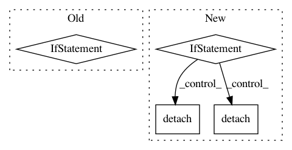

d9f1874e3489edc915228dcfdae64d5294034464,rllib/agents/pg/tests/test_pg.py,TestPG,test_pg_loss_functions,#TestPG#,34
Before Change
expected_logp = expected_logp.numpy()
expected_loss = -np.mean(
expected_logp *
(train_batch[Postprocessing.ADVANTAGES] if fw != "torch" else
train_batch[Postprocessing.ADVANTAGES].numpy()))
check(results, expected_loss, decimals=4)
After Change
adv = train_batch[Postprocessing.ADVANTAGES]
if sess:
expected_logp = sess.run(expected_logp)
elif fw == "torch":
expected_logp = expected_logp.detach().cpu().numpy()
adv = adv.detach().cpu().numpy()
else:
expected_logp = expected_logp.numpy()
expected_loss = -np.mean(expected_logp * adv)
In pattern: SUPERPATTERN
Frequency: 3
Non-data size: 4
Instances
Project Name: ray-project/ray
Commit Name: d9f1874e3489edc915228dcfdae64d5294034464
Time: 2020-10-27
Author: sven@anyscale.io
File Name: rllib/agents/pg/tests/test_pg.py
Class Name: TestPG
Method Name: test_pg_loss_functions
Project Name: ray-project/ray
Commit Name: 66df8b8c3522dcb47ce163f1d8f9503c094459ce
Time: 2020-03-31
Author: sven@anyscale.io
File Name: rllib/utils/numpy.py
Class Name:
Method Name: fc
Project Name: OpenNMT/OpenNMT-py
Commit Name: b40c5085bfd8f46a7bfca10b73f91b55a353c918
Time: 2019-01-29
Author: benzurdopeters@gmail.com
File Name: onmt/decoders/decoder.py
Class Name: RNNDecoderBase
Method Name: detach_state